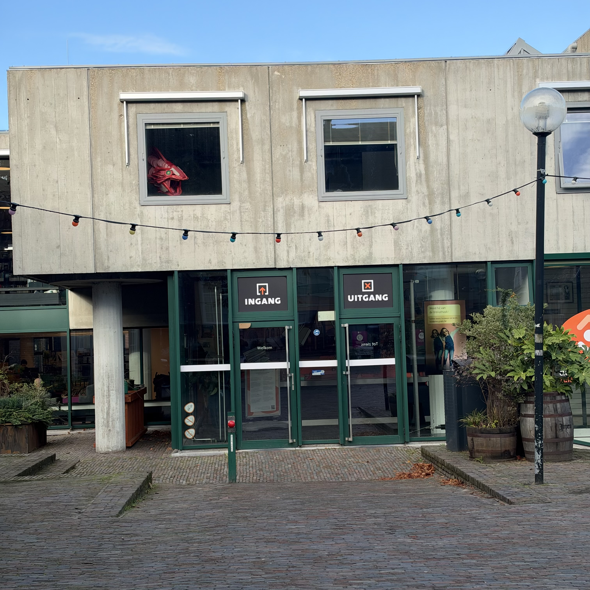
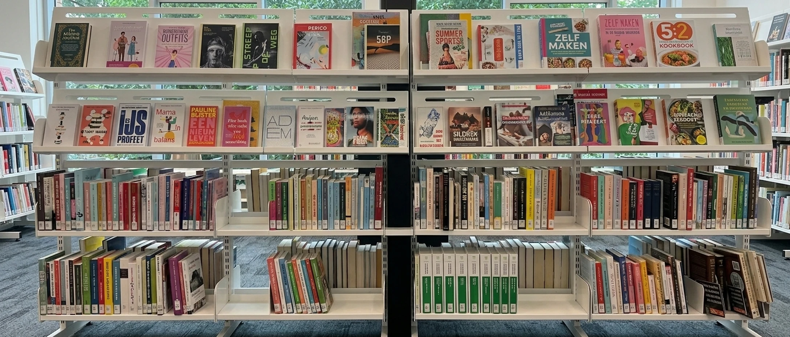
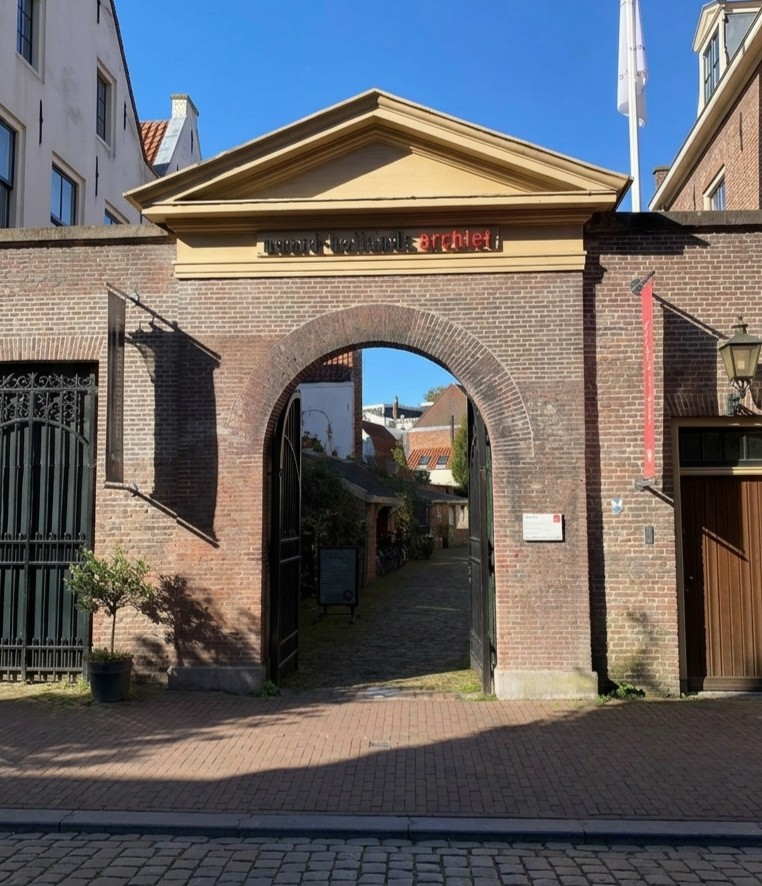
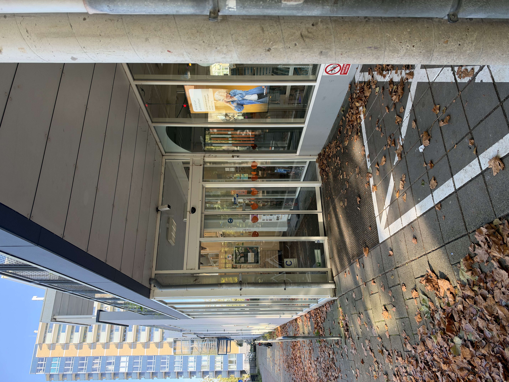
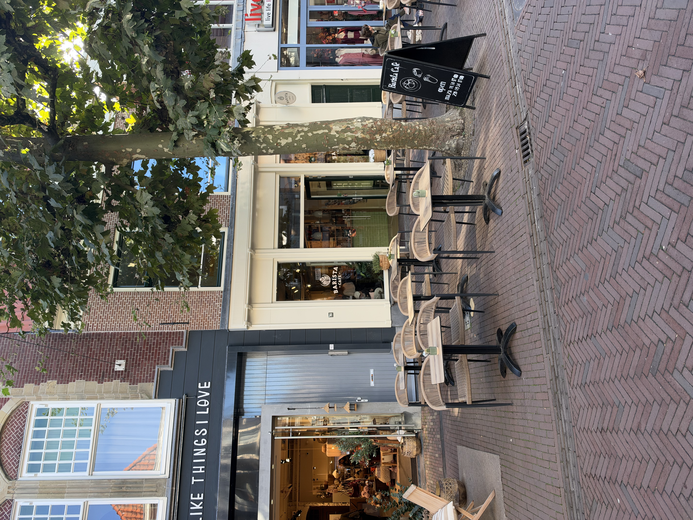
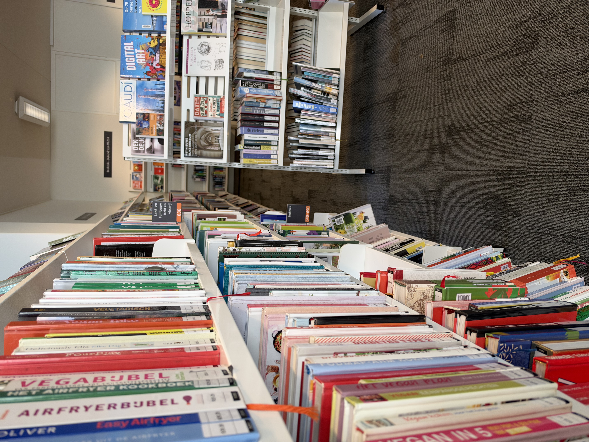

de Bibliotheek Haarlem Centrum
Gasthuisstraat 32, 2011 XP HaarlemThe main public library in the city centre, with study desks, free Wi-Fi and a café inside. Free to enter and easy to reach on foot.
- W
- S
- F
Discover
Explore study locations and compare the information that matters to students.


The main public library in the city centre, with study desks, free Wi-Fi and a café inside. Free to enter and easy to reach on foot.

The regional archive near the city centre, with a quiet reading room and its own café. A calm spot for focused work.

A modern neighbourhood library in Schalkwijk with study tables and free Wi-Fi, usually calmer than the city centre branch.

A lively café in the main shopping street with Wi-Fi and plenty of seating. Good for laptop work, though it can get busy.

A work-friendly coffee bar on the Spaarne. Study spots are paid by the hour and include unlimited coffee and tea.